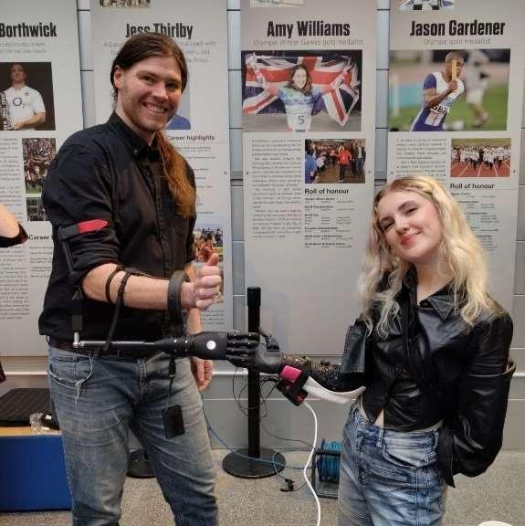
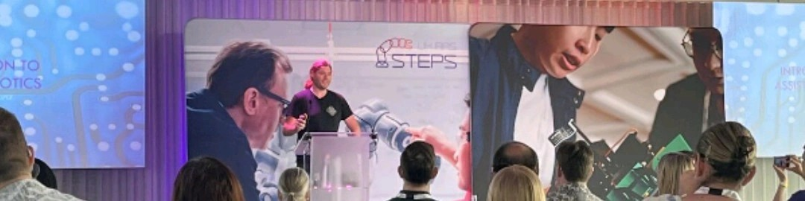
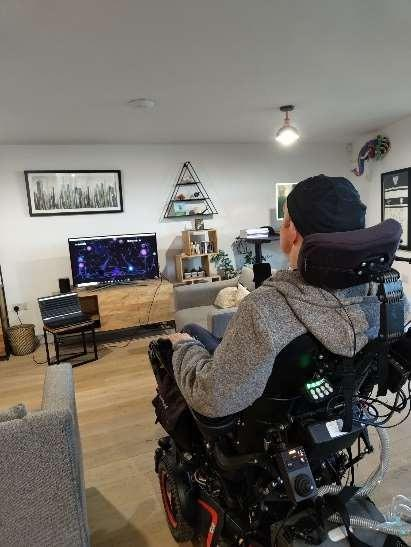
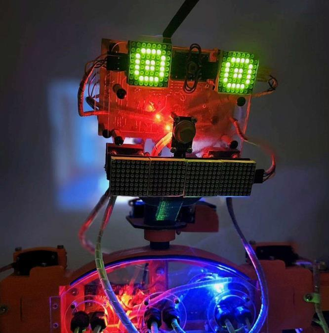
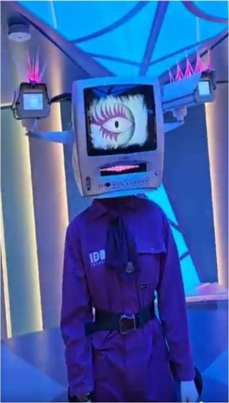

One workshop for the whole stack — because one person has worked at every layer of it
Red Queen Solutions grew out of an unusually broad career: data-acquisition engineering, bespoke electronics and PCB design, medical devices, brain–computer interfaces and human augmentation, and humanoid robotics. Add fifteen years on the decks and a pandemic PPE effort built from nothing, and you get a workshop where the circuit board, the firmware, the software and the AI aren't separate suppliers — they're one pair of hands.
Chris — engineer, maker, and the person behind the boxes
More than a decade across IT, engineering, electronics, robotics and AI — with fifteen years on the decks for good measure.
Chris founded Red Queen Solutions after getting his hands on every part of a system — the network it runs on, the hardware it lives in, the boards inside it, the code that drives it and, latterly, the AI that ties it all together.
That range is the whole point of the company. Most projects get split across a hardware supplier, a software house and someone else's cloud. Here they're one person's remit — designed, built and hosted under one roof near Aztec West, Bristol.
From the decks to Red Queen Solutions
Fifteen years on the decks
A professional DJ across some 150 venues in England, Wales, Japan, Denmark and Australia — and, along the way, an expert Pioneer and Technics repairer. The final set was a goodbye gig at Boomtown Festival in 2025.
Into IT
Started out in IT after university — running and fixing school networks and hardware, from backups to swapping failed components.
IT support for every kind of business
At an IT support company, kept the networks, servers and hardware running for businesses of every stripe — from bakeries and organic farms to security companies, environmental and solar firms, and major charities. Whatever the sector, if it had computers it needed keeping alive.
Australia — workshop & network manager
Moved to Australia and ran the workshop of a high-street computer store. Macs were its speciality, but the bench took in anything — PCs and laptops, Windows and Linux, tablets and phones, networks and general electronics — and he was the store's network manager too.
Into engineering
Maintained data-acquisition rigs on survey vehicles — National Instruments and LabVIEW, lasers and load cells — bought his first 3D printer to build Arduino-based calibration tools, and started building his very first robot.
Electronics specialist — five years at a university
Designed and built bespoke lab equipment for an engineering faculty, across CAD, CAM, code and PCB design — including an eleven-month secondment to a soft-robotics research group.
Hack the Pandemic — a factory in two weeks
As the pandemic hit and PPE ran short, Chris co-founded Hack the Pandemic, a crowdfunded volunteer effort. Hobbyist 3D printers fed a central assembly line, and an emergency-response factory in a village hall was running in under two weeks — supplying GP surgeries, district nurses, care homes and hospitals across the M4 corridor. Over 10,000 face visors, almost 6,000 mask clips and 1,500+ hands-free door-openers, with the designs open-sourced and re-cut for the US and Brazil. It became Hack the Problem, a community interest company that has since run a food bank and built disability-assistance devices.
Human augmentation — BCIs, prosthetics & AI
Human-augmentation work aimed squarely at real, everyday independence — programming brain–computer interfaces, working hands-on with prosthetics, and building VR/AR, digital assistants, wearables and bespoke medical electronics such as blood-pressure monitoring.

Recognition — where robotics meets people
Nominated for Outstanding Robotics Engineering in the UK RAS STEPS Technical Excellence awards, and invited to present on assistive robotics at the showcase at the Science Museum in London. Also nominated in a research-photography award — for a photograph of a friend, who is tetraplegic, playing a computer game using only a brain–computer interface.


Humanoid robotics
Went on to humanoid robotics for a major company — setting up the lab from scratch, building test kit and designing small improvements, then maintaining, upgrading and troubleshooting a fleet of humanoid robots day to day.
Elysa & Wake the Tiger
Chris's own robotics line has run since 2017. As a robotics-engineering contractor for Wake the Tiger — Bristol's immersive art experience — he built Elysa 3.0, who lives there as the manager of the Repair Shack, along with other characters, and he still looks after them for the venue. Elysa 4.0 is in development, kept under wraps until it's ready.


Red Queen Solutions
Today Chris runs Red Queen Solutions — focused on the business-management suite, home automation, and the next Elysa. Alongside that he builds bespoke test equipment for clients in aviation, the yacht industry and education, plus other one-off projects — while the business software keeps growing and the CCTV and installation side of things widens. One workshop, all local, tying it together.
A small team that covers the whole job
Engineering
Design, build, software, robotics and support — the technical side, start to finish.
Accounts & compliance
The books kept straight, and everything above board.
Contracts & legal
Agreements drawn up and the legal side kept in order.
Procurement & logistics
Parts sourced and kit where it needs to be, when it's needed.
Where this is going
Red Queen Solutions' ambition is to bring its on-site AI and its robotics together — for people at home and in industry alike. One space, all local, controlling everything.
Start a project →